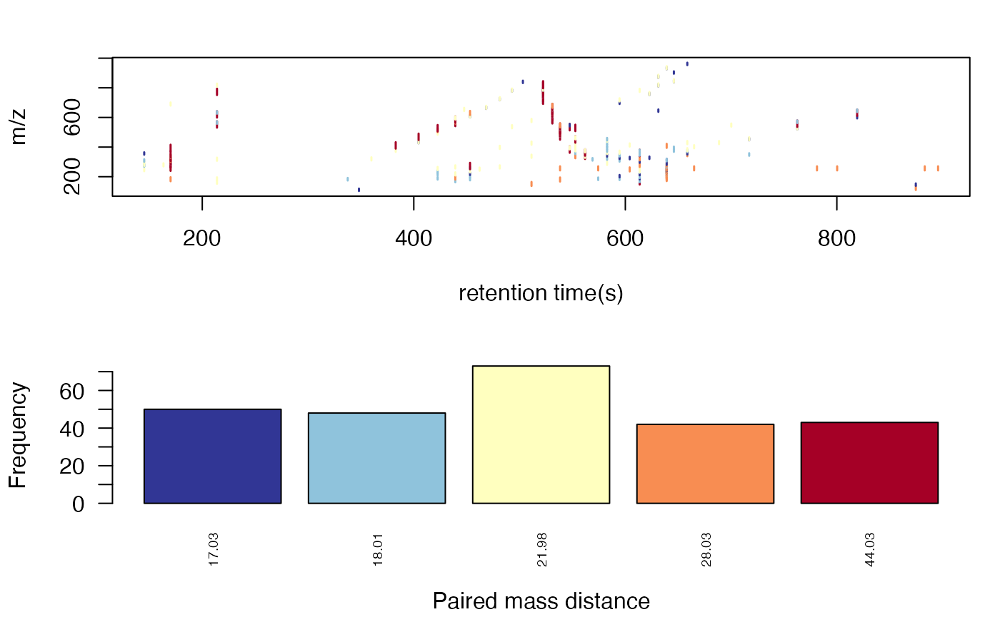
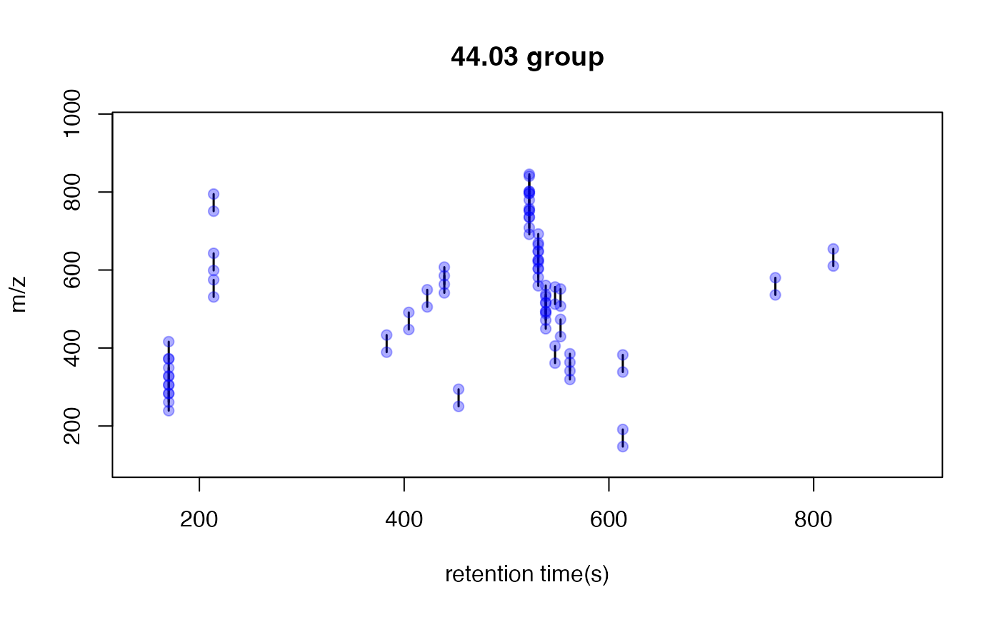
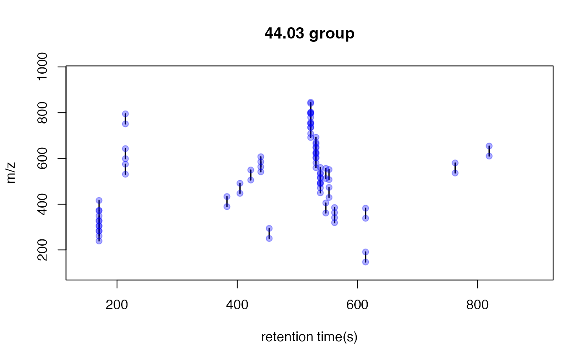
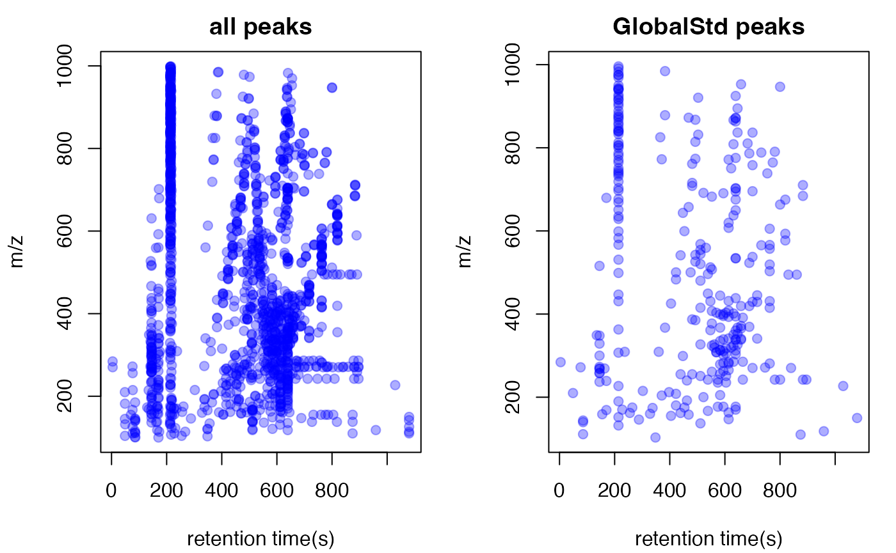

Paired Mass Distance(PMD) analysis for GC/LC-MS based non-targeted analysis
Miao Yu
2019-03-12
globalstd.RmdIntroduction of Paired Mass Distance analysis
pmd package use Paired Mass Distance (PMD) relationship to analysis the GC/LC-MS based non-targeted data. PMD means the distance between two masses or mass to charge ratios. In mass spectrometry, PMD would keep the same between two masses or two mass to charge ratios(m/z). There are twe kinds of PMD involved in this package: PMD within same retention time group and PMD from different retention time groups.
PMD within same retention time group
In GC/LC-MS based non-targeted analysis, peaks could be seperated by chromatograph. We could build retention time(RT) bins to assign peaks into different RT groups by retention time hierarchical clustering analysis. For each RT group, the peaks should come from same compounds or co-elutes. If certain PMD appeared in multiple RT groups, it would be related to the relationship about adducts, neutral loss, isotopologues or commen fragments ions.
PMD from different retention time groups
The peaks from different retention time groups would like to be different compounds seperated by chromatograph. The PMD would reflect the relationship about homologous series or chemical reactions.
GlobalStd algorithm use the PMD within same RT group to find independent peaks among certain dataset. Structure/reaction directed analysis use PMD from different RT groups to screen important compounds or reactions.
Data format
The input data should be a list object with at least two elements from a peaks list:
- mass to charge ratio with name of
mz, high resolution mass spectrometry is required - retention time with name of
rt
However, I suggested to add intensity and group information to the list for validation of PMD analysis.
In this package, a dataset from in vivo solid phase micro-extraction(SPME) was attached. This dataset contain 9 samples from 3 fish with triplicates samples for each fish. Here is the data strcture:
library(pmd)
data("spmeinvivo")
str(spmeinvivo)
#> List of 4
#> $ data : num [1:1459, 1:9] 1095 10439 10154 2797 90211 ...
#> ..- attr(*, "dimnames")=List of 2
#> .. ..$ : chr [1:1459] "100.1/170" "100.5/86" "101/85" "103.1/348" ...
#> .. ..$ : chr [1:9] "1405_Fish1_F1" "1405_Fish1_F2" "1405_Fish1_F3" "1405_Fish2_F1" ...
#> $ group:'data.frame': 9 obs. of 1 variable:
#> ..$ class: Factor w/ 3 levels "fish1","fish2",..: 1 1 1 2 2 2 3 3 3
#> $ mz : num [1:1459] 100 101 101 103 104 ...
#> $ rt : num [1:1459] 170.2 86.3 84.9 348.1 48.8 ...You could build this list object from the xcms objects via enviGCMS package. When you have a xcmsSet object or XCMSnExp object named xset, you could use enviGCMS::getmzrt(xset) or enviGCMS::getmzrt2(xset) to get such list. Of course you could build such list by yourself.
GlobalStd algorithm
GlobalStd algorithm try to find independent peaks among certain peaks list. The first step is retention time hierarchical clustering analysis. The second step is to find the relationship among adducts, neutral loss, isotopologues and commen fragments ions. The third step is to screen the independent peaks.
Retention time hierarchical clustering
pmd <- getpaired(spmeinvivo, rtcutoff = 10, ng = 10)
#> 75 retention time cluster found.
#> 435 paired masses found
#> 10 unique PMD(s) used for further investigation.
#> 583 isotopologue(s) related paired mass found.
#> 685 multi-charger(s) related paired mass found.
plotrtg(pmd)
This plot would show the distribution of RT groups. The rtcutoff in function getpaired could be used to set the cutoff of the distances in retention time hierarchical clustering analysis.
Relationship among adducts, neutral loss, isotopologues and commen fragments ions
The ng in function getpaired could be used to set cutoff of global PMD’s retention time group numbers. If ng is 10, at least 10 of the retention time groups should contain the shown PMD relationship. You could use plotpaired to show the distribution.
plotpaired(pmd)
You could also show the distribution of PMD relationship by index:
# show the unique PMD found by getpaired function
for(i in 1:length(unique(pmd$paired$diff2))){
diff <- unique(pmd$paired$diff2)[i]
index <- pmd$paired$diff2 == diff
plotpaired(pmd,index)
}
 



Screen the independent peaks
You could use getstd function to get the independent peaks.
std <- getstd(pmd)
#> 11 group(s) with multiple peaks while no isotope/paired relationship
#> 8 group(s) with multiple peaks with isotope without paired relationship
#> 4 group(s) with paired relationship without isotope
#> 44 group(s) with paired relationship and isotope
#> 257 std mass found.
#> 8 retention group(s) have single peaks.Here you could plot the peaks by plotstd function to show the distribution of independent peaks:
plotstd(std)
You could also plot the peaks distribution by assign a retention time group via plotstdrt:
par(mfrow = c(2,3))
plotstdrt(std,rtcluster = 23,main = 'Retention time group 23')
plotstdrt(std,rtcluster = 9,main = 'Retention time group 9')
plotstdrt(std,rtcluster = 18,main = 'Retention time group 18')
plotstdrt(std,rtcluster = 67,main = 'Retention time group 67')
plotstdrt(std,rtcluster = 49,main = 'Retention time group 49')
plotstdrt(std,rtcluster = 6,main = 'Retention time group 6')
Use independent peaks for MS/MS validation
Independent peaks are supporsing generated from different compounds. We could use those peaks for MS/MS analysis instead of DIA or DDA. Here we need multiple injections for one sample since it might be impossible to get all ions’ fragmental ions in one injection with good sensitivity. You could use gettarget to generate the index for the injections and output the peaks for each run.
# you need retention time for independent peaks
index <- gettarget(std$rt[std$stdmassindex])
#> You need 6 injections!
# output the ions for each injection
table(index)
#> index
#> 1 2 3 4 5 6
#> 32 30 42 60 39 54
# show the ions for the first injection
std$mz[index==1]
#> [1] 110.0092 139.0591 139.9877 149.0236 153.1277 155.1294 156.1777
#> [8] 158.1546 161.0600 162.1128 163.0758 170.0330 173.1335 174.1363
#> [15] 174.9383 181.1597 181.9871 186.1854 188.6484 190.9130 195.1027
#> [22] 209.1552 211.1698 220.1184 229.2008 235.1692 236.1730 237.6615
#> [29] 240.2335 242.2863 242.2863 242.2863 251.0476 265.2539 265.4216
#> [36] 269.9189 270.3185 270.3185 270.3185 271.3217 271.3217 272.3234
#> [43] 272.9318 279.1604 282.2811 282.9806 283.2249 286.3101 286.3101
#> [50] 291.0712 293.2853 294.2875 300.2046 308.2954 309.9372 313.3297
#> [57] 324.3266 328.0132 329.0052 329.8840 332.5619 335.3135 336.1296
#> [64] 336.3257 341.0180 358.3084 359.0292 365.1059 365.3196 367.3375
#> [71] 369.3534 371.3345 374.3041 377.3522 377.8991 384.3350 387.2851
#> [78] 387.7863 390.2490 398.2762 399.1231 400.9174 401.3421 403.2332
#> [85] 407.3384 417.3364 420.3568 429.0892 433.2781 439.2698 442.3376
#> [92] 444.3844 445.3874 447.1173 447.2935 448.1186 463.3975 498.9017
#> [99] 499.9050 505.1055 507.3303 512.4158 518.3245 520.3415 524.1178
#> [106] 528.4109 528.4989 538.3150 541.1208 541.3942 542.3266 555.2922
#> [113] 556.4416 559.4247 560.2193 560.3877 565.3827 578.1272 581.1925
#> [120] 590.3223 604.4152 608.8745 613.1827 614.5358 619.6137 621.4412
#> [127] 622.4229 626.3960 640.1961 670.4222 673.8481 679.5118 681.4675
#> [134] 685.2035 691.4631 694.6505 697.8511 702.8662 703.1383 708.6701
#> [141] 711.3532 712.8208 714.4484 731.8438 732.5472 737.5030 738.5066
#> [148] 739.5078 753.5196 772.3250 773.5940 784.2366 794.8123 801.4967
#> [155] 803.5434 805.3464 810.5068 813.8323 814.4154 819.3943 837.5278
#> [162] 870.7857 871.3033 875.8088 879.3785 883.7184 888.6729 889.8086
#> [169] 900.3092 907.1589 907.3250 921.4730 929.4891 930.1575 934.3019
#> [176] 947.7443 948.8063 956.7945 964.7811 968.7950 979.7901
std$rt[index==1]
#> [1] 1079.6500 511.2940 84.8490 583.7690 524.9460 804.4690 405.3890
#> [8] 470.3640 620.6270 256.1585 576.9100 215.0585 611.4120 611.4135
#> [15] 216.1500 615.0530 147.8970 501.3300 639.2075 218.0975 538.0810
#> [22] 611.4120 452.9630 170.8240 614.6260 576.9100 576.9100 639.6355
#> [29] 639.1010 538.2950 896.1220 711.5320 605.8400 618.2700 145.8285
#> [36] 144.6810 501.6500 604.7690 670.2425 880.8005 699.9580 742.6450
#> [43] 145.7540 664.9220 639.1000 146.0980 552.2670 732.0395 895.6960
#> [50] 161.3960 618.2710 618.5915 172.2230 569.4105 145.4960 636.9560
#> [57] 628.9860 509.1510 509.3650 144.3380 141.6810 608.1990 617.6270
#> [64] 557.6255 717.1835 650.2440 717.0520 143.9315 656.2235 644.2420
#> [71] 688.3880 551.7325 582.4840 650.0300 145.1090 656.0105 492.8650
#> [78] 492.4380 534.0100 492.2220 527.9020 145.1090 632.8410 601.3400
#> [85] 556.9840 603.4845 655.9035 717.1020 382.6760 639.3130 656.2430
#> [92] 582.4815 582.4825 716.8890 404.5340 717.1020 582.3755 213.7270
#> [99] 213.9270 762.4675 554.8390 550.3385 495.3295 515.3650 690.5290
#> [106] 422.7495 643.4925 520.8340 762.5770 628.3425 492.4360 512.7070
#> [113] 546.9100 439.4630 340.9965 533.3660 439.2500 819.4060 762.4690
#> [120] 510.4370 529.9730 213.9410 819.1920 639.0990 618.4840 531.0090
#> [127] 455.1500 530.5830 818.9790 527.7930 214.3560 172.8655 468.5430
#> [134] 883.1575 525.0090 639.1000 214.3710 213.7270 639.0990 594.2710
#> [141] 215.2290 214.7985 525.0080 214.1480 481.0785 481.0790 481.2930
#> [148] 480.6530 522.2240 370.0360 624.2695 700.3870 215.7855 520.0790
#> [155] 665.0290 213.5480 682.6000 214.5090 490.2940 467.2110 698.2460
#> [162] 216.5120 639.2070 214.3710 381.6350 632.1990 632.3055 215.2605
#> [169] 213.5480 213.3590 213.5480 497.7940 213.3110 213.5310 213.6405
#> [176] 800.0770 214.2010 215.0405 215.6320 213.9410 213.9410Validation by principal components analysis(PCA)
You need to check the GlobalStd algorithm’s results by principal components analysis(PCA).
library(enviGCMS)
par(mfrow = c(1,2),mar = c(4,4,2,1)+0.1)
plotpca(std$data,lv = as.numeric(std$group$class),main = substitute(paste(italic('in vivo'), " SPME samples(all peaks)")))
plotpca(std$data[std$stdmassindex,],lv = as.numeric(std$group$class),main = substitute(paste(italic('in vivo'), " SPME samples(selected peaks)")))Comparision with other packages
GlobalStd algorithm in pmd package could be treated as a way to extract pseudospectra. You could use getcluster to get peaks groups information for all GlobalStd peaks. Then you could choose export peaks with the highest intensities in each GlobalStd peaks groups.
stdcluster <- getcluster(std)
# extract pseudospectra for std peak 1
plot(stdcluster$cluster$stdmassg[stdcluster$cluster$i==42],stdcluster$cluster$ins[stdcluster$cluster$i==42],type = 'h',xlab = 'm/z',ylab = 'intensity',main = 'pseudospectra for GlobalStd peak 42')
# export peaks with the highest intensities in each GlobalStd peaks groups.
data <- stdcluster$data[stdcluster$stdmassindex2,]You could also use getcorcluster to find peaks groups by correlation analysis only.
corcluster <- getcorcluster(spmeinvivo)
#> 75 retention time cluster found.
par(mfrow = c(1,3),mar = c(4,4,2,1)+0.1)
plotpca(std$data,lv = as.numeric(std$group$class),main = substitute(paste(italic('in vivo'), " SPME samples(all peaks)")))
plotpca(std$data[std$stdmassindex,],lv = as.numeric(std$group$class),main = substitute(paste(italic('in vivo'), " SPME samples(selected peaks)")))
plotpca(std$data[corcluster$stdmassindex,],lv = as.numeric(std$group$class),main = substitute(paste(italic('in vivo'), " SPME samples(selected peaks by correlationship)")))
GlobalStd algorithm with intensity data
GlobalStd algorithm is designed to analysis data without intensity data. However, if you have intensity data, the independant peaks could be selected with more confindence. You could set up cutoff of Pearson Correlation Coefficient between peaks to refine the peaks selected by GlobalStd within same retention time groups.
std2 <- getstd(pmd,corcutoff = 0.9)
#> 24 group(s) with multiple peaks while no isotope/paired relationship
#> 12 group(s) with multiple peaks with isotope without paired relationship
#> 3 group(s) with paired relationship without isotope
#> 28 group(s) with paired relationship and isotope
#> 116 std mass found.
#> 8 retention group(s) have single peaks.
par(mfrow = c(1,3),mar = c(4,4,2,1)+0.1)
plotpca(std2$data,lv = as.numeric(std2$group$class),main = substitute(paste(italic('in vivo'), " SPME samples(all peaks)")))
plotpca(std$data[std$stdmassindex,],lv = as.numeric(std$group$class),main = substitute(paste(italic('in vivo'), " SPME samples(selected peaks)")))
plotpca(std2$data[std2$stdmassindex,],lv = as.numeric(std2$group$class),main = substitute(paste(italic('in vivo'), " SPME samples(selected peaks)")))
Structure/reaction directed analysis
getsda function could be used to perform Structure/reaction directed analysis. freqcutoff could be used to filter the PMD with high frequncy.
sda <- getsda(std, freqcutoff = 10)
#> Top 50 high frequency PMD groups were remained.
#> 18 groups were found as high frequency PMD group.
#> 0 were found as high frequency PMD.
#> 1.98 were found as high frequency PMD.
#> 2.02 were found as high frequency PMD.
#> 13.98 were found as high frequency PMD.
#> 14.02 were found as high frequency PMD.
#> 14.05 were found as high frequency PMD.
#> 15.99 were found as high frequency PMD.
#> 16.03 were found as high frequency PMD.
#> 28.03 were found as high frequency PMD.
#> 30.05 were found as high frequency PMD.
#> 42.05 were found as high frequency PMD.
#> 49.02 were found as high frequency PMD.
#> 58.04 were found as high frequency PMD.
#> 66.05 were found as high frequency PMD.
#> 68.06 were found as high frequency PMD.
#> 82.08 were found as high frequency PMD.
#> 116.08 were found as high frequency PMD.
#> 126.14 were found as high frequency PMD.You could use plotstdsda to show the distribution of the selected paired peaks.
plotstdsda(sda)
You could also use index to show the distribution of certain PMDs.
par(mfrow = c(2,3),mar = c(4,4,2,1)+0.1)
plotstdsda(sda,sda$sda$diff2 == 0)
plotstdsda(sda,sda$sda$diff2 == 13.98)
plotstdsda(sda,sda$sda$diff2 == 15.99)
plotstdsda(sda,sda$sda$diff2 == 14.02)
plotstdsda(sda,sda$sda$diff2 == 28.03)
plotstdsda(sda,sda$sda$diff2 == 58.04)
Structure/reaction directed analysis could be directily performed on all the peaks, which is slow to process:
sdaall <- getsda(spmeinvivo)
par(mfrow = c(2,3),mar = c(4,4,2,1)+0.1)
plotstdsda(sdaall,sdaall$sda$diff2 == 0)
plotstdsda(sdaall,sdaall$sda$diff2 == 13.98)
plotstdsda(sdaall,sdaall$sda$diff2 == 15.99)
plotstdsda(sdaall,sdaall$sda$diff2 == 14.02)
plotstdsda(sdaall,sdaall$sda$diff2 == 28.03)
plotstdsda(sdaall,sdaall$sda$diff2 == 58.04)Structure/reaction directed analysis for peaks/compounds only
When you only have data of peaks without retention time or compounds list, structure/reaction directed analysis could also be done by getrda function.
sda <- getrda(spmeinvivo$mz[std$stdmassindex])Parameters selection
Retention time cluster cutoff should fit the peak picking algorithm. For HPLC, 10 is suggested and 5 could be used for UPLC.
Global PMD’s retention time group numbers should be around 20 percent of the retention time cluster numbers. For example, if you find 100 retention time clusters, I suggested you use 20 as the empirical global PMD’s retention time group numbers.
As for the cutoff of the frequency of PMDs, you could change the frequency until you find certain PMD which you’re sure that it should appear in your dataset. For example, 16 should be considered as a good start. Any pmd with the frequency larger than PMD 16 could be further discussed.
Another important hint is that pre-filter your peak list by black samples or other quality control samples. Otherwise the running time would be long and lots of pmd relationship would be just from noise.
Wrap function
globalstd function is a wrap funtion to process GlobalStd algorithm and structure/reaction directed analysis in one line. All the plot function could be directly used on the list objects from globalstd function.
result <- globalstd(spmeinvivo)
#> 75 retention time cluster found.
#> 435 paired masses found
#> 10 unique PMD(s) used for further investigation.
#> 583 isotopologue(s) related paired mass found.
#> 685 multi-charger(s) related paired mass found.
#> 11 group(s) with multiple peaks while no isotope/paired relationship
#> 8 group(s) with multiple peaks with isotope without paired relationship
#> 4 group(s) with paired relationship without isotope
#> 44 group(s) with paired relationship and isotope
#> 257 std mass found.
#> 8 retention group(s) have single peaks.
#> Top 50 high frequency PMD groups were remained.
#> 18 groups were found as high frequency PMD group.
#> 0 were found as high frequency PMD.
#> 1.98 were found as high frequency PMD.
#> 2.02 were found as high frequency PMD.
#> 13.98 were found as high frequency PMD.
#> 14.02 were found as high frequency PMD.
#> 14.05 were found as high frequency PMD.
#> 15.99 were found as high frequency PMD.
#> 16.03 were found as high frequency PMD.
#> 28.03 were found as high frequency PMD.
#> 30.05 were found as high frequency PMD.
#> 42.05 were found as high frequency PMD.
#> 49.02 were found as high frequency PMD.
#> 58.04 were found as high frequency PMD.
#> 66.05 were found as high frequency PMD.
#> 68.06 were found as high frequency PMD.
#> 82.08 were found as high frequency PMD.
#> 116.08 were found as high frequency PMD.
#> 126.14 were found as high frequency PMD.Shiny application
An interactive document has been included in this package to show PMD analysis. You could run runPMD() to start the Graphical user interface(GUI) for GlobalStd algorithm and structure/reaction directed analysis. You need to prepare a csv file with m/z and retention time of peaks. Such csv file could be generated by run enviGCMS::getmzrtcsv() on the list object from enviGCMS::getmzrt(xset) or enviGCMS::getmzrt2(xset) function. You could also generate the csv file by enviGCMS::getmzrt(xset,name = 'test') or enviGCMS::getmzrt2(xset, name = 'test'). You will find the csv file in the working dictionary named test.csv.